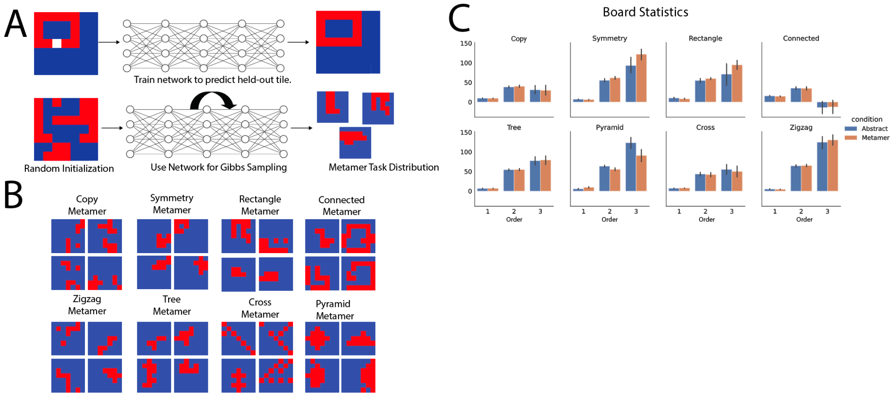

Sreejan Kumar1*, Ishita Dasgupta2, Raja Marjieh3, Nathaniel D. Daw13, Nathaniel. D.Cohen13, Thomas L. Griffiths34, Thomas. Griffiths: Disentangling Abstraction from Statistical Pattern Matching in Human.otypes and Machine Learning.
 The ability to acquire abstract knowledge is a hallmark of human intelligence and is believed to be one of the core differences between humans and neural networks. They compare the performance of humans and agents in a meta-reinforcement learning paradigm in which tasks are generated from abstract rules. They define a novel methodology for building “task metamers” that closely match the statistics of the abstract tasks but use a different underlying generative process.
Humans perform better at abstract tasks than metamer tasks. A widely-used meta-reinforcement learning agent performs worse on the tasks than the matched metamers. This work provides a foundation for characterizing differences between humans and machine learning that can be used in future work towards developing machines with human-like behavior.
Many experts believe humans are predisposed to acquire abstract rules during the process of learning, whereas neural networks will match statistical patterns. However, it can be very difficult to distinguish between these two kinds of behavior. This study identifies a new approach for rigorously distinguishing between these possibilities.
CNNstrained on ImageNet can achieve good performance despite having encoded a set of features that differs considerably from those humans use for the same task. This raises the question of whether neural networks trained on abstract task distributions actually acquire abstract knowledge, or if they learn other statisticalfeatures that correlate with or are downstream consequences of these rules.
It is often difficult to distinguish whether a human or artificial agent is making direct use of abstract structure versus the statistics associated with structure. This is in contrast with humans, who posited (innately and/or through lifelong learning) to represent, identify, and use abstract rules in settings.
They present a novel methodology for distinguishing between the use of abstractions versus statistics. They borrow the concept of a metamer from the field of human vision, in which metamers are pairs of color stimuli that have different underlying spectral power distributions but are nevertheless perceived as the same by the human eye (Drew & Funt 1992)
The work builds on a larger effort to construct tasks or task-manipulations informed by cognitive psychology that interrogate neural networks’abilities to exhibit properties of human cognition (Ritter et al2017; Piloto et al2018).44 is a task that interrogates neural networks that exhibit properties to exhibit human cognition.
Humans perform better on tasks generated from abstract rules than those generated by statistically matched tasks (abstract tasks) than on the statistically matched set (metamer tasks) Neural network meta-learners perform comparably across the two and in fact do slightly better on the metamer tasks.
Humans are predisposed to learning statistical patterns, while artificial neural agents learn statistical patterns. Humans perform abstract tasks better than those of artificial neural networks better than matched tasks. Humans are more likely to learn more abstract structures than neural networks, according to the authors of this paper.
Humans and machine-learning systems (henceforth referred to as agents) are shown a 7 × 7 grid of tiles all of which are initially white except for one which is red. The goal of the task is to reveal all red tiles while revealing as few blue ones as possible. The task ends when all the red tiles are revealed.
The work builds on this by using a suite of variousabstractions, that each generate a distribution of boards, in order to evaluate whether they are good enough to create a board. The results are based on the distribution of the boards, rather than the individual individual boards, they are distributed in a series of boards.
They tested eight abstractions for generating boards that produce recognizable patterns. Fthe of these were inspired by Marvin Minsky and Seymthe Papert’s (1969) book Perceptrons. Another fthe (tree, pyramid, cross, and zigzag) were based on general abstract structures.
An agent sequentially reveals tiles to uncover a picture on a 2D grid. The underlying boards are sampled from a specific abstraction, which defines a distribution of boards based on an abstract rule. More examples of boards from each distribution can be found in Fig.S1.
This approach may not reliably distinguish whether a system has truly internalized the underlying abstraction or whether it has learned statistical patterns in correlated stimuli that are correlated with the rules, allowing it to perform the task without fully encoded the rules themselves. They hope to produce a method that can be sensitive enough to systematically distinguish them.
They trained a different network for each rule, each typically achieved over 95% training accuracy (see Fig S1) They then sampled boards from the network’s learned conditionals with Gibbs sampling (Gibbs sampling) This is a common Markov chain Monte Carlo algorithm that is used to generate large samples.
Each sequence of decisions implemented by the network implements a Markov chain. The stationary distribution of this chain corresponds to the distribution encoded by network making the decision, which was trained on the conditional distributions of the boards. The Gibbs sampling procedure yielded samples from a “metamer” distribution of boards that matched the statistics of the abstract board, but were not generated directly by the rule.
They train a network to predict randomly held-out tiles of samples from an abstract rule-based distribution. They then use this network to perform Gibbs sampling. The first-order statistic is the number of red tiles, the second-order statistics of matching “triples” (i.ea tile, its neighbor, and its neighbor’s neighbor)
Meta-learning is an established approach for training agents to perform well on task distributions that share common structure. They used a common recurrent neural network trained using Advantage-Actor Critic(A2C) reinforcement learning. The statistics were not significantly different across each of the three levels between the abstract and metamerdistributions.
They trained a network-based meta-learning agent separately on each of the abstract task distributions and evaluated performance on tasks held-out during training. They also ran an experiment to evaluate human performance on the same tasks on which they evaluated the agent. They assumed that humans already had inductive biases (innate or learned from prior experience)
To evaluate performance, they counted the number of blue tiles that humans and agents revealed in the episode (lower is better) The lower this z-score, the better the human or agent did relative to the nearest neighbor heuristic. The lower the z-scored the human/agent’s performance on the distribution of nearest neighbor scores.
Performance is the number of tiles revealed z-scored by a nearest neighbor heuristic, so a lower number reflects better performance. They looked at example choice scenarios in a subset of the abstractions. In all cases, the agent chooses between human and neural network agents in all cases.
To evaluate the extent to which humans and machines performed differently on the two types of tasks, they carried out a three-way ANOVA. They found all effects to be statistically significant and, in particular, that humans and agents differed in their pattern of performance for the abstract versus metamer conditions. The latter was supported by a statistically significant two-way interaction of performer by condition or task type.
The direction of this effect was consistent for seven out of eight abstractions (all except cross) For those seven, humans performed relatively better on the abstract tasks compared to agents. The difference between mean abstract and mean metamer performance was larger for humans than for agents. This result indicates that agents do not benefit from the explicit abstract structure in the way humans do.
Humans performed significantly better on abstract tasks than agents (t518=-13.177,p<0.001) This effect was seen within seven out of eight abstract tasks (all except cross) When aggregating all eight abstractions, agents did numerically but not significantly better than humans.
Humans in aggregate perform better on abstract than metamer tasks. However, there were two abstractions (rectangle and cross) for which agents did significantly better in the abstract tasks than the metamer. This suggests that, even though on average agents are better at learning statistics, there are some abstractions that neural network agents can learn.
An example of how the method they present can expose subtler effects that may vary across specific instances, they carried out an exploratory analysis of specific choice scenarios. These behaviors are not surprising, and support the value of the approach in identifying new research on what kinds of abstractions are best recognized by humans and machines, respectively.
For each tile, the proportion of humans that picked that particular tile was reported. The agent did not tend to act according to the underlying rule, as the majority of humans did. For example, in symmetry, the agent tended to click a tile that is guaranteed to be blue due to the symmetry.
50% of humans clicked on tile that was guaranteed to be red due to the copy rule, demonstrating full understanding of the rule. The agent chooses tile that does not necessarily close the shape rather than tile that is guaranteed to close the current connected loop. Fifty percent of humans chose tile that will be red because of copy rule.
The goal was to create a distribution of 2D grid patterns that reflects human expectations about systematic patterns. The results show, once again, that humans performed better than agents on abstract tasks, while agents did better than humans on the metamer tasks. Evidence that humans are acting in a way that shows identification of the underlying abstract rules of the task whereas agents are not necessarily behaving this way.
For a 4 x 4 size grid, this distribution is over all possible 2D grids (2^16 = 65,356) This is a very large set of possible boards and obtaining human judgments for each one was not feasible. Instead, they sampled from this prior using Gibbs Sampling with People.
In a chain, a sweep was defined as having gone through a decision for all 16 tiles of the board. They ran 100 chains of length 16 sweeps x 16 tiles, with different initial boards, yielding a set of 100 x 16 x 16 = 25,600 boards. A histogram over these boards provided an approximation of the human prior over 2D board structure.
They measured 13.13 times a day and measured 13 times a week. They then measured the amount of time they measured. They measured the length of a person's height and length of their height. They also measured the height of the objects they measured, such as height, length, length and height.
Like the previous experiment, they found a statistically significant two-way interaction between the performer and condition (F1,126=530.462)Humans did significantly better on the original GSP boards than the corresponding metamers (t98=-9.304, p<0.304) while agents did significantlybetter on the metamer boards (t28=-88.701, p <0.001)
They asked sequences of individual participants to fill in a single tile in a 4 x 4 board, each based cumulatively on the boards produced by the responses of preceding participants. They examined how agents trained on abstract task distributions perform when given test tasks from the GSP and GSP-matched metamer boards.
They find agents performed similarly or even better on the metamer test tasks (see Fig 5) than on abstract boards for some of the abstractions. This suggests that agents did not perform as well as humans on the task distributions in which they saw the largest difference between agents and humans.
The agent's behavior indicates that the metamer distribution actually shares the structure it learned during training on the abstract tasks. This is consistent with the hypothesis that the agent learns statistical features even when trained on abstract task distributions. The ability to recognize and leverage abstract structure is a central tenet of human intelligence (Lake et al., 2017; Dehaene 2021; Mitchell 2021)
An exemplar deep learning system appears to preferentially encode the statistical structure associated with the generated data rather than the abstract rules that they were generated. They introduce a novel way to disambiguate these using “task-metamers” These metamers are generated to have statistical structure that is highly similar to the tasks generated from abstract rules, but that do not use those rules to create tasks.
They instantiate these metamers for a set of abstract rules used to generate tasks of a simple but richly-structured tile-revealing task. The rules are used to create a simple and richly, complex tile-referred-targets.
Humans generally performed better on abstract tasks than agents whereas agents performed better. This is consistent with the idea that humans have an inductive bias toward acquiring and using certain abstract structures, whereas neural network learning algorithms can be preferentially sensitive to the statistics that may be downstream consequences of these abstractions.
The neural network agents did significantly better at some abstract tasks (viz., the rectangle and cross abstractions) compared to their metamer counterparts (see Table S2) There were also exceptions in human performance (e.g., performance did not significantly differ between the abstract-metamer versions of the symmetry task, see Table S3)
Process is analogous to generating metamer samples, except it uses humans as the conditional model instead of a trained neural network. There are several recognizable abstract concepts that emerged from this process, such as lines, squares, and continuous shapes. Results using this method corroborated using predefined abstract rules, providing further evidence that humans have inductive behaviors that favor abstract rules.
The results suggest that this particular algorithm is biased to learn statistical structure associated with rules rather than the rules themselves. More importantly, the method they describe provides a means of rigorously evaluating the capabilities of other other algorithms of other algorithms, such as the algorithm that learns statistical structure of rules.
Machine learning algorithms with respect to their ability to infer abstract structure, some of which might be more predisposed to do so than the one they tested. The work paves the way towards understanding these abstract inductive biases in humans, which can inform the development of human-like machine learning systems.
Humans also have the unique ability to verbalize their thought processes and biases with language, which may be related to the ability to abstract. The role of natural language in describing (and maybe even inducing) abstractions is another interesting direction (Narasimhan et al2018, Andreas. 2015; Johnson et al2021) that describe the human generated GSP boards.
They hope that the methods and findings they have presented in this article will encourage and facilitate further work. They hope to rigorously evaluate and characterize the inductive biases used by humans and machine learning algorithms. They can work towards the twin goal of understanding human cognition and building intelligent systems with the capabilities of human cognition.
The network was given a board generated with an abstract rule that had a random tile masked out and trained to reproduce the entire board including the randomly masked tile. The loss was the binary cross-entropy between each of the predicted and actual masked tiles, summed over all tiles.
The network was trained on samples from the relevant abstraction for 4000 epochs. It typically achieved an accuracy of 95-99% accuracy. They used these conditional distributions to generate samples using Gibbs sampling. They then assigned the color of the missing tile by sampling from this binomial probability.
They use an LSTM meta-learner that takes the full board as input, passes it through a convolutional layer along with a fully connected layer. The agent had 49 possible actions corresponding to choosing a tile (on the 7 x 7 board) to reveal a tile. It then outputs a scaler baseline and a vector with a length of the number of actions (the estimated policy)
The agent was trained using Advantage Actor Critic (A2C) The actions are chosen using the softmax distribution of this vector. The reward function was: +1 for revealing red tiles, -1 for blue tiles, +10 for the last red tile, +2 for choosing an already revealed tile. The loss function of the agent is a weighted sum of the policy, value, and entropy loss terms respectively.
The resulting gradient of this loss function (often referred to as the policy gradient) is an unbiased estimator of the expected reward of the policy. The value-loss term is the mean-squared error between the network’s value1818 and its value2018.
The parameters of the network are optimized with this loss function through gradient descent and backpropagation through time. The agent was trained for two million episodes. The hyperparameter search was done using the Tree-Structured Parzen Estimator (Bergstra et al2011)
In a single trial, a set of hyperparameters was randomly sampled and evaluated by training the agent for roughly 500,000 episodes. The selected model was trained for two million episodes and then evaluated on held-out test grids that were previously unseen. They ran the search for up to 600 trials or up to 80 hours, whichever came first.
They trained different agents for each abstract task distribution and their corresponding metamer distribution. Participants were shown the 7.7-grid on their web browser and used mouse-clicks to reveal tiles. Each participant was randomly assigned to one of the eight different abstraction groups (copy, symmetry,rectangle, connected, tree, cross, pyramid, and zigzag) and, within each abstraction, they were assigned to either the abstract or metamer boards.
Participants had to reveal all red tiles to move on to the next grid. They were implicitly incentivized to be efficient (clicking as few blue tiles as possible) in order to finish the task quickly. The humans did not receive direct training on any of the task distributions.
Using Gibbs Sampling with People, or GSP, they generated a task distribution of boards directly from humans. The stimulus space consisted of the space of 4 x 4 boards, and each of the 16 stimulus dimensions corresponded to the binary color of each tile, namely, red or blue. A reward structure was displayed as the number of points accrued, but did not translate to monetary reward.
Each trial consisted of a prediction task of predicting what color the single masked square is in the grid conditional on the colors of the other squares on the grid. One of these dimensions was masked out (i.e. “greyed’) for the prediction task.
Participants were recruited on Amazon Mechanical Turk (AMT) and a total of 272 completed the study. The work was supported by the NIH T32MH065214 and the John Templeton Foundation. It is published on Amazon.com and is available to purchase online.
The opinions expressed in this publication are those of the authors and do not necessarily reflect the views of the John Templeton Foundation. They say the opinions do not reflect the opinions of the author of the article. The opinions are expressed in the opinion section of this article. They are happy to clarify that this article does not reflect any of the views expressed by the authors.